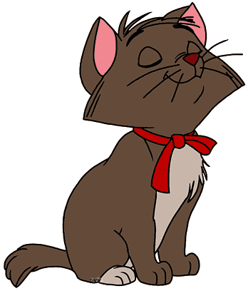

Add full-resolution source or processing-stage snapshots to compare up to four results side by side. Select a slot to fill or replace it; remove individual snapshots at any time.
A one-time setup so downloaded .meow project files display the custom Meow cat icon in Windows File Explorer instead of the generic blank document icon.
.meow

Because web browsers run in a secure sandbox, downloading a file cannot alter operating system file icons directly. This lightweight installer configures the .meow file icon association on your Windows device.
install-meow-icon.bat
%LOCALAPPDATA%\PurrfectCV
Safety & Permissions: Runs per-user (HKCU). Does not require Administrator rights and will not touch any other file types. An uninstaller script is included to revert anytime.
HKCU
The installer executes the following standard Windows commands upon user confirmation:
:: 1. Copy icon to local user directory mkdir "%LOCALAPPDATA%\PurrfectCV" copy /Y "meow-project.ico" "%LOCALAPPDATA%\PurrfectCV\meow-project.ico" :: 2. Register .meow file association in Windows Registry (HKCU) reg add "HKCU\Software\Classes\.meow" /ve /d "Meow.Project" /f reg add "HKCU\Software\Classes\.meow\OpenWithProgids" /v "Meow.Project" /t REG_SZ /d "" /f reg add "HKCU\Software\Classes\Meow.Project" /ve /d "Meow Project File" /f reg add "HKCU\Software\Classes\Meow.Project\DefaultIcon" /ve /d "%LOCALAPPDATA%\PurrfectCV\meow-project.ico,0" /f reg add "HKCU\Software\Classes\SystemFileAssociations\.meow\DefaultIcon" /ve /d "%LOCALAPPDATA%\PurrfectCV\meow-project.ico,0" /f reg add "HKCU\Software\Microsoft\Windows\CurrentVersion\Explorer\FileExts\.meow\OpenWithProgids" /v "Meow.Project" /t REG_SZ /d "" /f :: 3. Clear icon cache database and refresh Windows Explorer powershell -Command "[Shell]::SHChangeNotify(0x08000000, 0, [IntPtr]::Zero, [IntPtr]::Zero)" taskkill /f /im explorer.exe del /f /q "%LOCALAPPDATA%\IconCache.db" del /f /q "%LOCALAPPDATA%\Microsoft\Windows\Explorer\iconcache_*.db" start explorer.exe